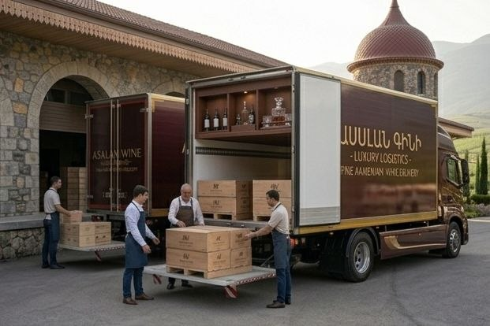
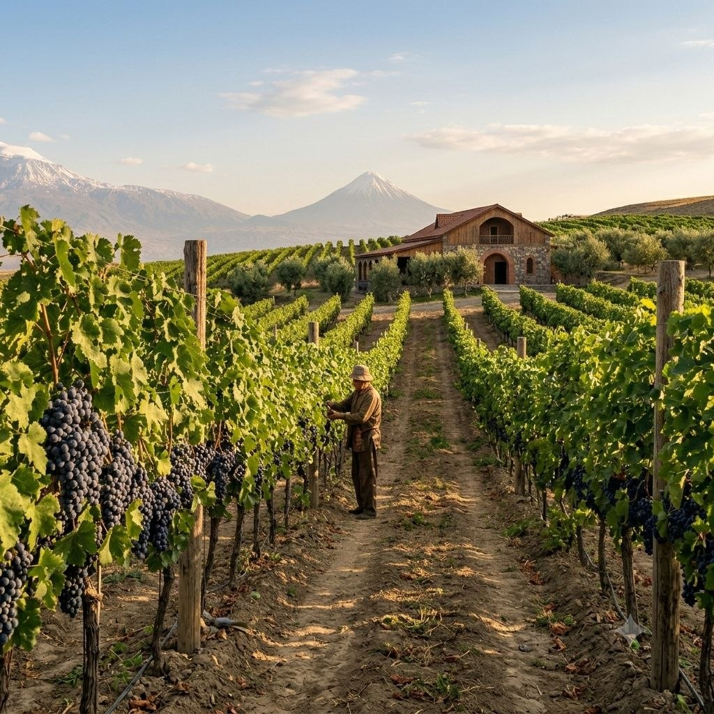
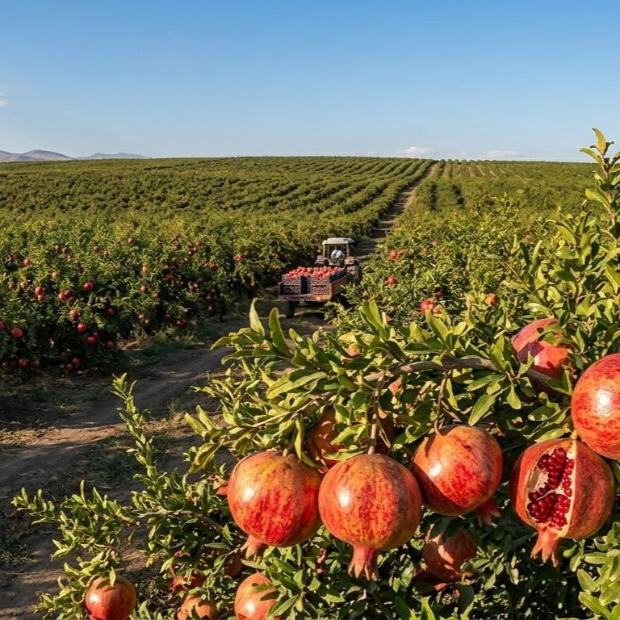
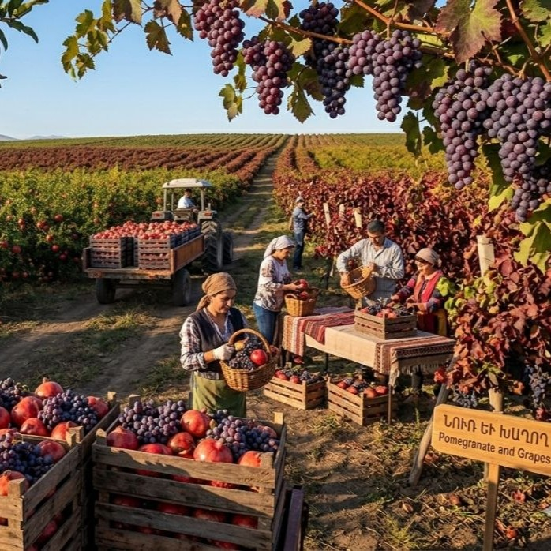
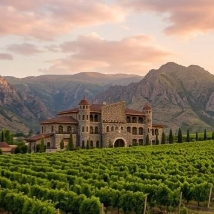
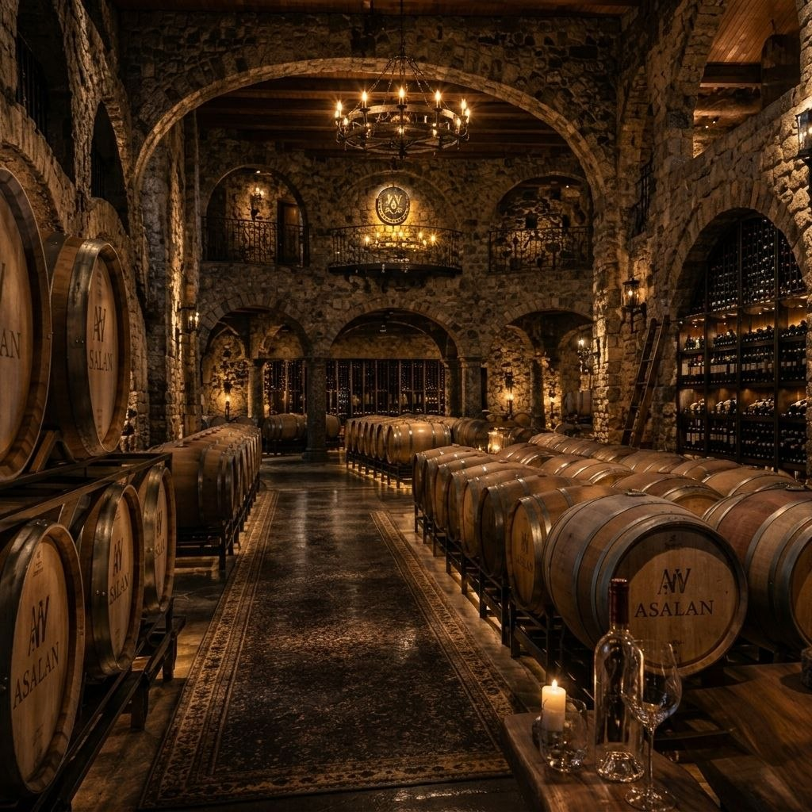

Արտահանում
Մեր գինիները արտահանվում են ավելի քան 15 երկրներ՝ ներառյալ Ֆրանսիա, Գերմանիա, Ռուսաստան, ԱՄՆ և Ճապոնիա։ Մենք ներկայացնում ենք հայկական գինեգործության ավանդույթներն ու բարձր որակը միջազգային շուկաներում՝ ապահովելով հուսալի մատակարարում և երկարաժամկետ գործընկերություն։ Տարիների ընթացքում ձեռք բերած փորձի և որակի նկատմամբ պատասխանատու մոտեցման շնորհիվ մեր արտադրանքը վստահություն է վայելում ինչպես գործընկերների, այնպես էլ սպառողների շրջանում։ Մենք շարունակաբար ընդլայնում ենք արտահանման աշխարհագրությունը՝ հայկական գինին դարձնելով ճանաչելի և պահանջված աշխարհի տարբեր շուկաներում։

Այգիներ

Մեր խաղողի այգիները գտնվում են բարենպաստ կլիմայական պայմաններում՝ ապահովելով բերքի բարձր որակ։ Այստեղ աճեցվում են ընտրված սորտեր, որոնք գինիներին հաղորդում են յուրահատուկ համ և բույր։

Մեր նռան այգիներում աճեցվում են բարձրորակ և հյութալի նռան տեսակներ։ Բնական պայմանների և խնամքի շնորհիվ ստացվում է հարուստ և առողջ բերք։

Այգիները զբաղեցնում են ընդարձակ տարածք՝ ստեղծելով ներդաշնակ միջավայր գյուղատնտեսության զարգացման համար։ Տարածքի արդյունավետ կառավարումը նպաստում է կայուն և որակյալ արտադրությանը։

Մեր այգիները համատեղում են ավանդական մշակության փորձն ու ժամանակակից մոտեցումները։ Յուրաքանչյուր սեզոն դրանք ապահովում են բարձրորակ բերք և բնական գեղեցկություն։
Մեր Մասին
«ASALAN» գինեգործարանի պատմությունը սկսվում է մի ընտանիքից, որը երկար տարիներ զբաղվել է խաղողագործությամբ և տարբեր մրգերի մշակությամբ։ Չնայած առատ բերքին՝ նրանք հաճախ բախվում էին իրացման խնդիրների, ինչի հետևանքով բերքի մի մասը չէր վաճառվում և կորուստներ էր առաջացնում։ Մի տարի, երբ բերքն առանձնապես շատ էր, ընտանիքը որոշեց խաղողից և այլ մրգերից գինի պատրաստել՝ դրանք պահպանելու նպատակով։ Շուտով պարզ դարձավ, որ ստացված գինին բարձրորակ է, բնական համով և հաճելի բույրով։ Այն հյուրասիրելով հարազատներին ու գյուղի բնակիչներին՝ ընտանիքը նկատեց աճող հետաքրքրություն և սկսեց փոքրածավալ վաճառք։ Սկզբնական շրջանում գինին շշալցվում էր պարզ պայմաններում, սակայն պահանջարկի աճին զուգահեռ կատարելագործվեցին արտադրական գործընթացներն ու փաթեթավորումը։ Ժամանակի ընթացքում ընտանեկան զբաղմունքը վերածվեց կայուն բիզնեսի։ Ներդրվեցին նոր սարքավորումներ, ընդլայնվեցին արտադրական հնարավորությունները և կիրառվեցին ժամանակակից տեխնոլոգիաներ։ Բնական հումքից պատրաստված գինին ճանաչում ձեռք բերեց ոչ միայն գյուղում, այլև հարակից համայնքներում։ Գինեգործարանի անվանումը՝ «ASALAN», ծագում է հիմնադիր ընտանիքի՝ Ասլանյանների ազգանունից։ Այն խորհրդանշում է ընտանիքի աշխատասիրությունը, համառությունն ու անցած ճանապարհը։ Այսօր «ASALAN»-ը ժամանակակից գինեգործարան է, որը շարունակում է պահպանել իր ընտանեկան արժեքներն ու ավանդույթները՝ առաջարկելով բարձրորակ արտադրանք։
